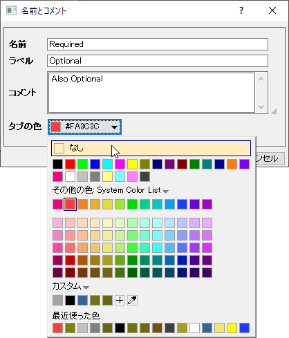

行列ブックと行列シートの基本操作
MatBk-Mats-Operation
ワークブックは、最大1024個のシートを含めることができます。 すべてのシートを削除すると、行列ブックも削除されます。 行列シートは並び替えたり、名前を変更することができます。 また、行列シートを切り離すことができ、別の行列ブックに追加したり、ワークスペースの何もない部分にドラッグして新しい新しい行列ブックを作成することができます。 各シートは最大9000万セル保有できます。現実的には、最大保有可能数はご利用のシステムリソースにより決定されます。
新しい行列ブックを開く
- 標準ツールバーの新しい行列ウィンドウボタンをクリックするか、ファイル: 新規作成: 行列メニューを選択します。
- メニューからファイル: 新規作成: 行列: 参照を選びます。新しいブックダイアログが開き、利用可能な行列ブックテンプレートを閲覧できます。新しいブックダイアログの右上角には、テンプレートセンターを開くボタン
 があります。ボタンをクリックして、解析作業で使用する新しいブックテンプレートを参照およびダウンロードします。
があります。ボタンをクリックして、解析作業で使用する新しいブックテンプレートを参照およびダウンロードします。
- 既存の行列シートから新しい行列ウィンドウを作成するには、行列シートタブをクリックしたまま、Originワークスペースの何もない部分にドラッグします。
行列ブックにシートを追加する
- 行列シートタブを右クリックし、ショートカットメニューから「挿入」、「追加」、「データ無しで複製」をクリックします。
- 既存の行列シートを他の行列ブックに追加するには、行列シートタブをクリックしたまま新しい行列ブックにドラッグします。
シートに名前とコメントを追加する
シートタブで右クリックし、名前とコメントをクリックして名前とコメントダイアログを開きます。
- 
- 各シートには名前が付けられ、シートタブに表示されます。
- オプションで、ラベル やコメントを追加できます。
- タブの色は、ドロップダウンリストを用いて、もしくはシートで何も選択されていない状態でスタイルツールバーのオブジェクトの塗り色ボタン
 をクリックして設定出来ます。
をクリックして設定出来ます。
- 名前の付け方については、行列ブック、行列シート、行列オブジェクトに名前を付けるを参照してください。
行列シートを他の行列ブックに移動
- 行列シートのタブをワークスペースにドラッグ&ドロップすると新しい行列ブックに移動できるほか、既存の行列ブックにドロップして移動することもできます。
- 複数行列シートを移動するには、Ctrl/Shift キーを押しながら複数のシートタブを選択してワークスペースか他の行列ブックにドラッグ&ドロップします。
- 任意の行列シートのタブ上で右クリックして操作...を選択します。
- 開いた行列シートの操作ダイアログボックスで、シートを選択（複数シートを選択する場合は Ctrl/Shift を押しながら選択）し、右クリックして移動先を選択します。
行列ブックまたはOriginのセッション間で行列シートをコピー/貼り付け
Origin 2018bから、現在のシートのタグ上で右クリックしてシートをコピーを選択し、クリップボードにコピーして、新しいシートとして貼り付けを選べば、新規の行列シートとして追加できます。
シートをコピーを選択したら、以下の操作が可能です。
- Originの灰色のワークスペースを右クリックして、新しいシートとして貼り付けを選択すると、新しい行列ブックとしてこのシートを貼り付けます。
- 他の行列ブックにあるシート上で右クリックして、新しいシートとして貼り付けを選択すると、その行列ブックの新しいシートとして貼り付けます。
- 他のOriginセッションに切り替えて、目的の行列ブックのシートタブを右クリックして新しいシートとして貼り付けを選択すると、このOriginセッションの選択された行列ブックのシートに貼り付けます。この場合、異なるOriginセッション間で行列シートをコピー/貼り付けできます。
行列シートに新しい行列オブジェクトを追加
- 「Ctrl + Shift + N」のショートカットキーを使用してサムネイルを表示し、その後サムネイルを右クリックして、コンテキストメニューから追加 を選びます。もしくはオブジェクトボタン
 をクリックして、ポップアップメニューから追加を選択します。
をクリックして、ポップアップメニューから追加を選択します。
現在の行列オブジェクトの前に新しい行列オブジェクトを挿入するには
- 「Ctrl + Shift + N」のショートカットキーを使用してサムネイルを表示し、その後サムネイルを右クリックして、コンテキストメニューから挿入 を選びます。もしくはオブジェクトボタンをクリックして、ポップアップメニューから挿入を選択します。
「行列ブックの表示属性」ダイアログボックスを使って行列の外観表示を変更する
行列の外観に関する編集は、行列プロパティで行うことができ、これは、「行列：セル属性の設定」を選択して開くことができます。
このダイアログで、ダイアログの列の幅を入力したり、行列データの表示フォーマット、桁数、データ型を設定することができます。 これらの設定は、アクティブ行列に対してのみ適用することができます。 同じシートの別の行列オブジェクトを編集するには、「戻る」と「進む」ボタンを使って、行列オブジェクトを移動し、その設定を変更できます。
「書式」および「スタイル」ツールバーを使って行列の外観を変更する
いくつかの行列項目については「書式」および「スタイル」ツールバーを使って編集することができます。 まず、変更するワークシートの部分を選択します。
- フォント、ポイントサイズなどを編集するには、「書式」ツールバーのボタンを使用します。
- フォントの色を編集するには、「スタイル」ツールバーのフォントの色ドロップダウンリストを使います。
- セルまたは列の色を編集するには、 「スタイル」ツールバーの塗りつぶしの色を使います。
- セルへの境界線を追加(または削除)するには、「スタイル」ツールバーの境界線ボタンを使います。
行列ブックを保存する
データやその他の変更を含む行列ブックを.ogwuまたは.ogwファイルとして保存できます。
- 行列ウィンドウをアクティブにして、「ファイル：ウィンドウの新規保存」を選びます。 「名前を付けて保存」ダイアログボックスが表示されます。 「ファイルの種類」ドロップダウンリストで「行列 (*.ogmu)」がデフォルトで選択されています。
- 「ファイル名」テキストボックスにファイル名を入力し、保存先のフォルダを選択します。
行列ブックテンプレートを保存する
行列ブックに行った編集は、テンプレートとして保存することができます。（行列ブックとしてではなく）ただし、テンプレートとして保存すると、データは保存されません。
- 編集した行列ブックをアクティブにして、ファイル：テンプレートの新規保存を選択します。
- テンプレート名とファイルタイプを指定します。必要に応じて、テンプレート説明を入力し、ファイルパス（\User Files\のデフォルトパスが一般的に最も望ましいです）とプレビューイメージ（Windowsファイルエクスプローラでのプレビューを使用する場合に主に役立ちます-それ以外の場合は、Originが内部で使用されるプレビュー（例：新しいブックに表示されるポップアップ画像のプレビュー）を生成します）を設定します。
行列テンプレートについての詳細は、何が行列テンプレートと一緒に保存されるのか? をご覧ください。